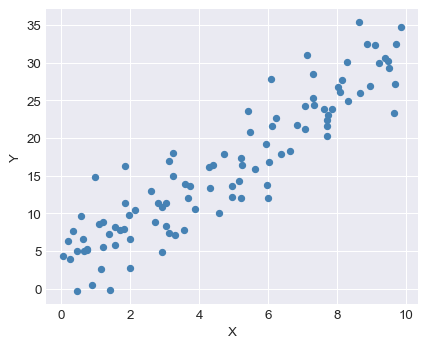
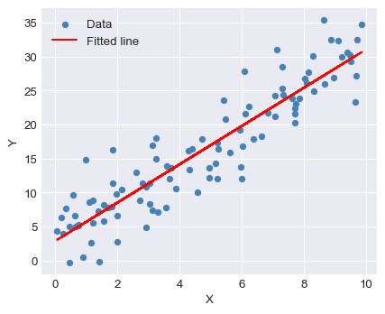
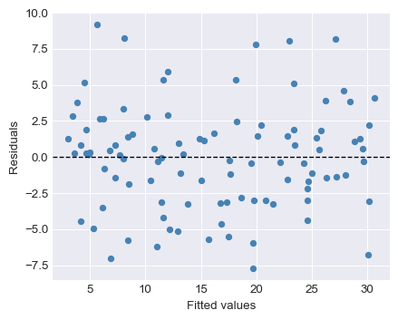

import numpy as np
import scipy.stats as stats
import scipy.optimize as optimize
import pandas as pd
import matplotlib.pyplot as plt
from typing import Sequence
plt.style.use('seaborn-v0_8-darkgrid')10 Object-Oriented Programming
10.1 Introduction
In this chapter, we introduce the object-oriented programming (OOP) paradigm in Python. We illustrate the main concepts of the OOP approach by creating a class to estimate and present the results of a simple linear regression model. We also show how to use inheritance to create a new class that extends the functionality of the original class.
10.2 Main concepts
In Python, everything is an object, and each object has a class (or type) that defines its behavior and properties. Object-oriented programming (OOP) is a programming paradigm that allows us to create objects with class-specific attributes and methods. In the OOP approach, we first define a class that serves two purposes. First, it acts as a blueprint for creating objects (instances) of that class. Second, it defines the attributes (data) and methods (functions) that objects of the class will have.
We illustrate the OOP approach by creating a class to estimate and present the results of a simple linear regression model. However, before we proceed with the example, we first introduce some main concepts of the OOP approach in Python:
- Class: A blueprint for creating objects. It also defines the attributes and methods for the created objects.
- Object: An instance of a class. It contains data (attributes) and functions (methods) that operate on that data.
- Constructor: A special method that is called when an object is instantiated. It is typically used to initialize the object’s attributes. It is defined using the
__init__method. The first argument of the constructor is alwaysself, which is a reference to the current instance of the class. - Self: A reference to the current instance of the class. It is the first argument in the constructor and is used to access attributes and methods of the class within its own methods.
- Instance Attributes: Variables that belong to an object (an instance of the class). Each instance of the class has its own copy of these variables. They are usually defined within the constructor method (
__init__). We can access attributes using the dot notation (e.g.,object.attribute). - Instance Methods: Functions that belong to an object. They define behaviors that the object can perform. We usually use the
defkeyword to define instance methods. Their first parameter is alwaysself, which refers to the current instance. We can call methods using the dot notation and parentheses (e.g.,object.method()). - Magic Methods: Special methods that start and end with double underscores (e.g.,
__init__,__str__). They allow us to define how objects of our class behave with built-in operations (e.g., addition, string representation). - Class Variables: Variables that are shared among all instances of a class. They are defined within the class but outside any methods.
- Class Methods: Methods that belong to the class and can access class variables. They are defined using the
@classmethoddecorator and takecls(the class itself) as the first parameter instead ofself. These methods can access class-level variables but not instance-level variables. - Static Methods: Methods that do not access instance or class variables. They are defined using the
@staticmethoddecorator and do not takeselforclsas the first parameter. - Properties: These are methods that are accessed like attributes. They are defined using the
@propertydecorator. Their first parameter is alwaysself. - Inheritance: A mechanism that allows a new class (child class) to inherit attributes and methods from an existing class (parent class).
10.3 The running example
To illustrate the OOP concepts provided in the previous section, we consider the following simple linear regression model: \[ Y_i = \beta_0 + \beta_1 X_i + u_i, \quad i = 1, 2, \ldots, n, \] where \(Y_i\) is the dependent variable, \(X_i\) is the independent variable, \(\beta_0\) and \(\beta_1\) are the coefficients to be estimated, and \(u_i\) is the error term.
Let \(\hat{\beta}_0\) and \(\hat{\beta}_1\) be the OLS estimators of \(\beta_0\) and \(\beta_1\). These estimators are defined as follows: \[ \hat{\beta}_1 = \frac{\sum_{i=1}^n (X_i - \bar{X})(Y_i - \bar{Y})}{\sum_{i=1}^n (X_i - \bar{X})^2}, \quad \hat{\beta}_0 = \bar{Y} - \hat{\beta}_1 \bar{X}, \] where \(\bar{X}\) and \(\bar{Y}\) are the sample means of \(X\) and \(Y\), respectively.
Let \(\hat{Y}_i\) be the predicted value of \(Y_i\) and \(\hat{u}_i\) be the residual (the difference between the observed and predicted values of \(Y_i\)). These values are defined as follows: \[ \hat{Y}_i = \hat{\beta}_0 + \hat{\beta}_1 X_i, \quad \hat{u}_i = Y_i - \hat{Y}_i. \] for \(i = 1, 2, \ldots, n\).
In the following code, we generate simulated data for the model. We set \(n=100\), \(\beta_0=2\), and \(\beta_1=3\). The independent variable \(X\) is generated from a uniform distribution between 0 and 10, and the error term \(u\) is generated from a standard normal distribution. Finally, we generate the dependent variable \(Y\) using the model equation.
# Generate simulated data
np.random.seed(42)
n = 100
X = np.random.rand(n) * 10 # Independent variable
beta_0 = 2 # Intercept
beta_1 = 3 # Slope
u = 4*np.random.randn(n) # Error term
Y = beta_0 + beta_1 * X + u # Dependent variable# Create a DataFrame for easier handling and visualization
data = pd.DataFrame({'X': X, 'Y': Y})
data.head()| X | Y | |
|---|---|---|
| 0 | 3.745401 | 13.584392 |
| 1 | 9.507143 | 29.325400 |
| 2 | 7.319939 | 24.326861 |
| 3 | 5.986585 | 12.009479 |
| 4 | 1.560186 | 5.801872 |
# Plot the synthetic data
plt.figure(figsize=(5, 4))
plt.scatter(data['X'], data['Y'], color='steelblue', label='Data points', s=20)
plt.xlabel('X')
plt.ylabel('Y')
# plt.title('Synthetic Data for Linear Regression')
# plt.legend()
plt.show()
10.4 Defining the OLS class
In the following code, we define the OLS class using the keyword class. We introduce the class-level docstring through triple quotes to describe the purpose of the class, its attributes, and methods.
# Define the OLS class
class OLS:
"""
Ordinary Least Squares (OLS) regression for a single predictor.
Attributes
----------
X : np.ndarray
Independent variable data.
Y : np.ndarray
Dependent variable data.
n : int
Number of observations.
beta_0 : float
Estimated intercept (initialized as None).
beta_1 : float
Estimated slope (initialized as None).
fitted : bool
Indicates whether the model has been fitted.
Methods
-------
estimate()
Estimates the slope and intercept using OLS formulas.
predict(X_new)
Predicts Y values for new X data.
summary()
Prints the estimated coefficients and R-squared.
plot_fit()
Plots the data points and the fitted regression line.
"""
def __init__(self, X, Y):
"""
Initialize the OLS object with data.
Parameters
----------
X : array-like
Independent variable values.
Y : array-like
Dependent variable values.
"""
self.X = np.array(X)
self.Y = np.array(Y)
self.n = len(Y)
self.beta_0 = None
self.beta_1 = None
self.fitted = False
def estimate(self):
"""
Estimate the regression coefficients (intercept and slope)
using the ordinary least squares method.
"""
X_mean = np.mean(self.X)
Y_mean = np.mean(self.Y)
self.beta_1 = np.sum((self.X - X_mean) * (self.Y - Y_mean)) / np.sum((self.X - X_mean) ** 2)
self.beta_0 = Y_mean - self.beta_1 * X_mean
self.fitted = True
def predict(self, X_new):
"""
Predict the dependent variable values for new data.
Parameters
----------
X_new : array-like
New values of the independent variable.
Returns
-------
np.ndarray
Predicted Y values.
Raises
------
RuntimeError
If the model has not been fitted yet.
"""
if not self.fitted:
raise RuntimeError("Model is not fitted yet. Call the 'estimate' method first.")
return self.beta_0 + self.beta_1 * np.array(X_new)
def summary(self):
"""
Print the estimated regression coefficients and R-squared value.
Raises
------
RuntimeError
If the model has not been fitted yet.
"""
if not self.fitted:
raise RuntimeError("Model is not fitted yet. Call the 'estimate' method first.")
y_pred = self.predict(self.X)
ss_res = np.sum((self.Y - y_pred) ** 2)
ss_tot = np.sum((self.Y - np.mean(self.Y)) ** 2)
r2 = 1 - ss_res / ss_tot
print(f"Estimated coefficients:\nIntercept (beta_0): {self.beta_0}\nSlope (beta_1): {self.beta_1}")
print(f"R-squared: {r2:.4f}")
def plot_fit(self):
"""
Plot the data points and the fitted regression line.
Raises
------
RuntimeError
If the model has not been fitted yet.
"""
if not self.fitted:
raise RuntimeError("Model is not fitted yet. Call the 'estimate' method first.")
plt.figure(figsize=(5, 4))
plt.scatter(self.X, self.Y, label='Data', color='steelblue', s=20)
plt.plot(self.X, self.predict(self.X), color='red', label='Fitted line')
plt.xlabel('X')
plt.ylabel('Y')
plt.legend()
plt.show()The class has an __init__ method (the constructor) that initializes the attributes of the class, including the data and coefficients. The first argument of each method is self, which is a reference to the current instance of the class. In the __init__ method, we initialize the attributes X, Y, n, beta_0, beta_1, and fitted.
We then define three methods: estimate, predict, and summary. We also have docstrings for each method to explain their purpose and parameters. The estimate method calculates the OLS estimates for the coefficients:
self.beta_1 = np.sum((self.X - X_mean) * (self.Y - Y_mean)) / np.sum((self.X - X_mean) ** 2)
self.beta_0 = Y_mean - self.beta_1 * X_meanAlso, note that we set the attribute fitted to True once we estimate the model.
The predict method takes new values of X and returns the predicted values of Y using the estimated coefficients. Here, we first check if the model has been fitted by verifying the fitted attribute. If the model is not fitted, an exception is raised. Finally, we use the estimated coefficients to make predictions in the following way:
self.beta_0 + self.beta_1 * np.array(X_new)The summary method prints the estimated coefficients and R-squared value. Here, we also check if the model has been fitted before displaying the summary.
Finally, we define the plot_fit method to visualize the fitted line along with the original data points.
10.5 Using the OLS class
We can create an instance of the class by calling the class name and passing the required arguments (the independent and dependent variable data). This will invoke the __init__ method to initialize the object’s attributes.
# Create an instance of the OLS class and estimate the coefficients
model = OLS(data['X'], data['Y'])The type of the model object is __main__.OLS, indicating that it is an instance of the OLS class defined in the current module.
type(model)__main__.OLSNote that we can access the attributes of the model object using the dot notation. For example, we can check the number of observations n and the initial values of beta_0 and beta_1.
# Access attributes of the model
model.n
model.beta_0
model.beta_1
model.fitted100FalseWe can use the dir function to list all the attributes and methods of the model object.
# List all attributes and methods of the model
dir(model)['X',
'Y',
'__class__',
'__delattr__',
'__dict__',
'__dir__',
'__doc__',
'__eq__',
'__firstlineno__',
'__format__',
'__ge__',
'__getattribute__',
'__getstate__',
'__gt__',
'__hash__',
'__init__',
'__init_subclass__',
'__le__',
'__lt__',
'__module__',
'__ne__',
'__new__',
'__reduce__',
'__reduce_ex__',
'__repr__',
'__setattr__',
'__sizeof__',
'__static_attributes__',
'__str__',
'__subclasshook__',
'__weakref__',
'beta_0',
'beta_1',
'estimate',
'fitted',
'n',
'plot_fit',
'predict',
'summary']The dir(model) output includes both the attributes and methods that we defined in the OLS class and some built-in attributes and methods that are part of every Python object. The output can be classified as follows:
- Attributes and methods defined in the
OLSclass: These includeX,Y,n,beta_0,beta_1,fitted, and the methodsestimate,predict,summary, andplot_fit. - Built-in attributes and methods: These include special methods (also known as “magic methods” or “dunder methods”) that start and end with double underscores, such as
__init__,__str__,__repr__, etc. These methods are used to define the behavior of the object in various contexts (e.g., initialization, string representation).
The following table gives a summary of the special methods commonly found in Python objects.
| Method | Description |
|---|---|
__init__ |
Constructor method called when an object is created. |
__str__ |
Defines the string representation of the object. |
__repr__ |
Defines the official string representation of the object. |
__delattr__ |
Allows deletion of attributes from an object. |
__dict__ |
Stores the object’s attributes in a dictionary. |
__dir__ |
Returns a list of the object’s attributes and methods. |
__doc__ |
Stores the documentation string for the object. |
__eq__ |
Defines behavior for the equality operator (==). |
__format__ |
Defines behavior for the format function and string formatting. |
__ge__ |
Defines behavior for the greater than or equal to operator (>=). |
__getattribute__ |
Defines behavior for accessing attributes of the object, e.g., model.__getattribute__('X') |
__gt__ |
Defines behavior for the greater than operator (>). |
__hash__ |
Defines a hash value for the object (needed for using it in sets or as dict keys). |
__le__ |
Defines behavior for the less than or equal to operator (<=). |
__lt__ |
Defines behavior for the less than operator (<). |
__ne__ |
Defines behavior for the not equal operator (!=). |
__module__ |
Stores the module name in which the object was defined. |
__init_subclass__ |
Called when a class is subclassed. Allows customizing subclass behavior. |
__new__ |
Called to create a new instance of a class. ` |
We can access the docstrings for the class and its methods using the __doc__ attribute.
# Access the docstring of the OLS class
print(OLS.__doc__)
Ordinary Least Squares (OLS) regression for a single predictor.
Attributes
----------
X : np.ndarray
Independent variable data.
Y : np.ndarray
Dependent variable data.
n : int
Number of observations.
beta_0 : float
Estimated intercept (initialized as None).
beta_1 : float
Estimated slope (initialized as None).
fitted : bool
Indicates whether the model has been fitted.
Methods
-------
estimate()
Estimates the slope and intercept using OLS formulas.
predict(X_new)
Predicts Y values for new X data.
summary()
Prints the estimated coefficients and R-squared.
plot_fit()
Plots the data points and the fitted regression line.
# Access the docstring of a specific method
print(OLS.estimate.__doc__)
Estimate the regression coefficients (intercept and slope)
using the ordinary least squares method.
Instead of using the class name, we can also access the docstrings using the instance of the class (model in our case):
# Access the docstring of the OLS class
print(model.__doc__)
Ordinary Least Squares (OLS) regression for a single predictor.
Attributes
----------
X : np.ndarray
Independent variable data.
Y : np.ndarray
Dependent variable data.
n : int
Number of observations.
beta_0 : float
Estimated intercept (initialized as None).
beta_1 : float
Estimated slope (initialized as None).
fitted : bool
Indicates whether the model has been fitted.
Methods
-------
estimate()
Estimates the slope and intercept using OLS formulas.
predict(X_new)
Predicts Y values for new X data.
summary()
Prints the estimated coefficients and R-squared.
plot_fit()
Plots the data points and the fitted regression line.
# Access the docstring of a specific method
print(model.estimate.__doc__)
Estimate the regression coefficients (intercept and slope)
using the ordinary least squares method.
The help function can also be used to display the documentation for the class and its methods.
# Display the help for the OLS class
help(OLS)Help on class OLS in module __main__:
class OLS(builtins.object)
| OLS(X, Y)
|
| Ordinary Least Squares (OLS) regression for a single predictor.
|
| Attributes
| ----------
| X : np.ndarray
| Independent variable data.
| Y : np.ndarray
| Dependent variable data.
| n : int
| Number of observations.
| beta_0 : float
| Estimated intercept (initialized as None).
| beta_1 : float
| Estimated slope (initialized as None).
| fitted : bool
| Indicates whether the model has been fitted.
|
| Methods
| -------
| estimate()
| Estimates the slope and intercept using OLS formulas.
| predict(X_new)
| Predicts Y values for new X data.
| summary()
| Prints the estimated coefficients and R-squared.
| plot_fit()
| Plots the data points and the fitted regression line.
|
| Methods defined here:
|
| __init__(self, X, Y)
| Initialize the OLS object with data.
|
| Parameters
| ----------
| X : array-like
| Independent variable values.
| Y : array-like
| Dependent variable values.
|
| estimate(self)
| Estimate the regression coefficients (intercept and slope)
| using the ordinary least squares method.
|
| plot_fit(self)
| Plot the data points and the fitted regression line.
|
| Raises
| ------
| RuntimeError
| If the model has not been fitted yet.
|
| predict(self, X_new)
| Predict the dependent variable values for new data.
|
| Parameters
| ----------
| X_new : array-like
| New values of the independent variable.
|
| Returns
| -------
| np.ndarray
| Predicted Y values.
|
| Raises
| ------
| RuntimeError
| If the model has not been fitted yet.
|
| summary(self)
| Print the estimated regression coefficients and R-squared value.
|
| Raises
| ------
| RuntimeError
| If the model has not been fitted yet.
|
| ----------------------------------------------------------------------
| Data descriptors defined here:
|
| __dict__
| dictionary for instance variables
|
| __weakref__
| list of weak references to the object
# Display the help for a specific method
help(OLS.estimate)Help on function estimate in module __main__:
estimate(self)
Estimate the regression coefficients (intercept and slope)
using the ordinary least squares method.
The estimate method can be called using the dot notation to estimate the coefficients of the linear regression model. Note that we use parentheses () to call the method, which indicates that we are executing the method rather than just accessing it. Also, we do not need to pass the self argument explicitly; it is automatically passed by Python when we call the method on the object.
# Estimate the coefficients and display the summary and plot
model.estimate()We can now access the estimated coefficients and the fitted attribute to check if the model has been fitted.
# Access the estimated coefficients and fitted status
model.beta_0, model.beta_1, model.fitted(np.float64(2.860384630186992), np.float64(2.8160907091507874), True)Next, we can use the predict method to make predictions for new values of X. From predict(self, X_new), we understand that we need to pass the new values as an argument to the method. Also from self.beta_0 + self.beta_1 * np.array(X_new), we see that the argument X_new can be a data type that can be converted to a NumPy array, such as a list or a NumPy array itself.
# Make predictions
X_new = [0, 5, 10]
predictions = model.predict(X_new)
predictionsarray([ 2.86038463, 16.94083818, 31.02129172])The summary does not take any arguments other than self, so we can call it without any additional parameters.
# Display the summary of the model
model.summary()Estimated coefficients:
Intercept (beta_0): 2.860384630186992
Slope (beta_1): 2.8160907091507874
R-squared: 0.8434Finally, we can use the plot_fit method to plot the fitted line along with the original data points.
# Plot the fitted line
model.plot_fit()
10.6 Other useful methods
In our OLS class, all methods that we defined are instance methods because they operate on the instance of the class (i.e., the model object). However, Python also supports other types of methods, such as class methods, static methods and properties. These methods are defined using decorators. A decorator is indicated by the @ symbol followed by the decorator name, placed above the method definition. In the following code, we add examples of these methods to our OLS class.
# Define the OLS class with additional methods
class OLS:
"""
Ordinary Least Squares (OLS) regression for a single predictor.
Attributes
----------
X : np.ndarray
Independent variable data.
Y : np.ndarray
Dependent variable data.
n : int
Number of observations.
beta_0 : float
Estimated intercept (initialized as None).
beta_1 : float
Estimated slope (initialized as None).
fitted : bool
Indicates whether the model has been fitted.
Class Attributes
----------------
model_count : int
Number of OLS instances created.
Methods
-------
estimate()
Estimates the slope and intercept using OLS formulas.
predict(X_new)
Predicts Y values for new X data.
summary()
Prints the estimated coefficients and R-squared.
plot_fit()
Plots the data points and the fitted regression line.
show_assumptions()
Prints the key assumptions of OLS regression.
"""
# Class attribute to count the number of instances
model_count = 0
def __init__(self, X: np.ndarray, Y: np.ndarray):
"""Initialize the OLS object with data."""
self.X = X
self.Y = Y
self.n = len(Y)
self.beta_0 = None
self.beta_1 = None
self.fitted = False
# Increment class-level model count
OLS.model_count += 1
# ----------------------------
# Instance methods
# ----------------------------
def estimate(self):
"""Estimate the regression coefficients using OLS formulas."""
X_mean = np.mean(self.X)
Y_mean = np.mean(self.Y)
self.beta_1 = np.sum((self.X - X_mean) * (self.Y - Y_mean)) / np.sum((self.X - X_mean) ** 2)
self.beta_0 = Y_mean - self.beta_1 * X_mean
self.fitted = True
def predict(self, X_new: np.ndarray) -> np.ndarray:
"""Predict Y values for new X data."""
if not self.fitted:
raise RuntimeError("Model is not fitted yet. Call 'estimate' first.")
return self.beta_0 + self.beta_1 * X_new
def summary(self):
"""Print the estimated coefficients and R-squared value."""
if not self.fitted:
raise RuntimeError("Model is not fitted yet. Call 'estimate' first.")
y_pred = self.predict(self.X)
ss_res = np.sum((self.Y - y_pred) ** 2)
ss_tot = np.sum((self.Y - np.mean(self.Y)) ** 2)
r2 = 1 - ss_res / ss_tot
print(f"Estimated coefficients:\nIntercept (beta_0): {self.beta_0}\nSlope (beta_1): {self.beta_1}")
print(f"R-squared: {r2:.4f}")
def plot_fit(self):
"""Plot the data points and the fitted regression line."""
if not self.fitted:
raise RuntimeError("Model is not fitted yet. Call 'estimate' first.")
plt.figure(figsize=(5, 4))
plt.scatter(self.X, self.Y, label='Data', color='steelblue', s=20)
plt.plot(self.X, self.predict(self.X), color='red', label='Fitted line')
plt.xlabel('X')
plt.ylabel('Y')
plt.legend()
plt.show()
# ----------------------------
# Class methods
# ----------------------------
@classmethod
def get_model_count(cls) -> int:
"""Return the number of OLS instances created."""
return cls.model_count
@classmethod
def show_assumptions(cls, detailed: bool = False):
if detailed:
print("OLS Assumptions (Detailed):")
print("1. Zero conditional mean: E[u | X] = 0.")
print("2. Random sampling: Data are i.i.d.")
print("3. No large outliers: X and Y have finite fourth moments.")
else:
print("OLS Assumptions (Brief):")
print("1. Zero conditional mean")
print("2. Random sampling")
print("3. No large outliers")
# ----------------------------
# Static method
# ----------------------------
@staticmethod
def causal():
"""Print when OLS estimates have a causal interpretation."""
print("Under three assumptions, the OLS estimates have a causal interpretation.")
# ----------------------------
# Property
# ----------------------------
@property
def info(self) -> str:
"""Return a summary of the data as a string."""
return f"X has {len(self.X)} observations and Y has {len(self.Y)} observations"In the init method of this new version, we specify the data types of the parameters X and Y as np.ndarray using type hints: X: np.ndarray and Y: np.ndarray. We also initialize a class variable model_count to keep track of the number of OLS instances created. Each time an instance is created, we increment this count by 1 using OLS.model_count += 1. Alternatively, we could use self.__class__.model_count += 1 to achieve the same effect. This class variable is shared among all instances of the class.
We added the following new class methods: get_model_count and show_assumptions. Both class methods use the @classmethod decorator and take cls as the first parameter, which refers to the class itself. In the first method, get_model_count(cls) -> int indicates that the method takes the class itself as the first parameter (cls) and returns an integer (int). The method returns the number of OLS instances created by accessing the class variable model_count. The show_assumptions method prints the three key assumptions of the OLS regression.
# Create multiple instances to test the class method
model1 = OLS(data['X'], data['Y'])
model2 = OLS(data['X'], data['Y'])
model3 = OLS(data['X'], data['Y'])
# Get the number of OLS instances created
OLS.get_model_count()3The show_assumptions method takes an optional boolean parameter detailed (default is False). If detailed is True, it prints a more detailed explanation of each assumption. Otherwise, it prints a brief summary.
# Show the OLS assumptions
OLS.show_assumptions()OLS Assumptions (Brief):
1. Zero conditional mean
2. Random sampling
3. No large outliers# Show detailed OLS assumptions
OLS.show_assumptions(detailed=True)OLS Assumptions (Detailed):
1. Zero conditional mean: E[u | X] = 0.
2. Random sampling: Data are i.i.d.
3. No large outliers: X and Y have finite fourth moments.The static method causal uses the @staticmethod decorator and does not take self or cls as the argument. In our case, it simply prints a message about when OLS estimates have a causal interpretation.
# Call the static method
OLS.causal()Under three assumptions, the OLS estimates have a causal interpretation.The property info uses the @property decorator and takes self as the parameter. It returns a summary of the data as a string. We can access the property without parentheses, just like an attribute.
# Access the property
model1.info'X has 100 observations and Y has 100 observations'10.7 Inheritance
The OOP allows us to use attributes and methods of an existing class (parent class) in a new class (child class). This process is called inheritance. In the following code, we create a new class called Residual that inherits from the OLS class. We also add two new methods to the Residual class: compute_residuals and plot_residuals. The compute_residuals method calculates the residuals of the fitted model, while the plot_residuals method creates a scatter plot of the residuals against the fitted values.
class Residual(OLS):
"""
Residual analysis for OLS regression.
Inherits from OLS and provides methods to compute and visualize residuals.
"""
def __init__(self, X: np.ndarray, Y: np.ndarray):
# Call the parent constructor
super().__init__(X, Y)
def compute_residuals(self) -> np.ndarray:
"""Compute residuals (observed - predicted)."""
if not self.fitted:
raise RuntimeError("Model is not fitted yet. Call 'estimate' first.")
y_pred = self.predict(self.X)
return self.Y - y_pred
def plot_residuals(self):
"""Scatter plot of residuals vs. fitted values."""
if not self.fitted:
raise RuntimeError("Model is not fitted yet. Call 'estimate' first.")
residuals = self.compute_residuals()
fitted_values = self.predict(self.X)
plt.figure(figsize=(5, 4))
plt.scatter(fitted_values, residuals, color="steelblue", s=20)
plt.axhline(0, color="black", linestyle="--", linewidth=1)
plt.xlabel("Fitted values")
plt.ylabel("Residuals")
plt.show()The Residual class inherits from the OLS class using the syntax class Residual(OLS). Its constructor calls the constructor of the parent class with super().__init__(X, Y), which initializes the attributes defined in the OLS class. Note that in super().__init__(X, Y), we do not provide the type hints X: np.ndarray and Y: np.ndarray again, as they are already defined in the parent class. In this way, we inherit the attributes X, Y, n, beta_0, beta_1, and fitted from the OLS class.
Also note that the instance methods of OLS, estimate, predict, summary, and plot_fit, are automatically inherited by the Residual class. We can use these methods on instances of the Residual class.
# Create and fit residual model
res_model = Residual(data['X'], data['Y'])
type(res_model)__main__.Residual# Check that inherited methods work
res_model.estimate()
# Check estimated coefficients
res_model.beta_0, res_model.beta_1, res_model.fitted(np.float64(2.860384630186992), np.float64(2.8160907091507874), True)We can now use the methods defined in the Residual class to compute and plot the residuals of the OLS regression. In the compute_residuals method, we first compute the predicted values using the predict method of the parent class: y_pred = self.predict(self.X). Then, we calculate the residuals as the difference between the observed and predicted values: self.Y - y_pred.
# Get residuals
residuals = res_model.compute_residuals()
# Descriptive statistics of residuals
pd.Series(residuals).describe()count 1.000000e+02
mean 2.797762e-16
std 3.610500e+00
min -7.709672e+00
25% -2.874963e+00
50% 1.907114e-01
75% 1.870270e+00
max 9.172212e+00
dtype: float64Finally, we can use the plot_residuals method to create a scatter plot of the residuals against the fitted values.
# Scatter plot of residuals
res_model.plot_residuals()
10.8 Importing and exporting the class
To use the OLS class in another script or module, we can save the class definition in a separate Python file. Assume that we save the class in a file named myols.py. Note that we also need to ensure that the myols.py includes all necessary modules that are imported at the beginning of this chapter. We can then import the class using the import statement. If our current working directory includes the myols.py file, we can import the class as follows:
# Import the OLS class from the myols module
from myols import OLS
# Create an instance of the OLS class and estimate the coefficients
model = OLS(data['X'], data['Y'])
# Estimate the coefficients
model.estimate()Note that when naming the file, we need to ensure that it does not conflict with existing module names in Python’s standard library or third-party packages. For example, naming the file math.py would conflict with Python’s built-in math module.
10.9 Further reading
We recommend the following resources for further reading on the OOP approach in Python: